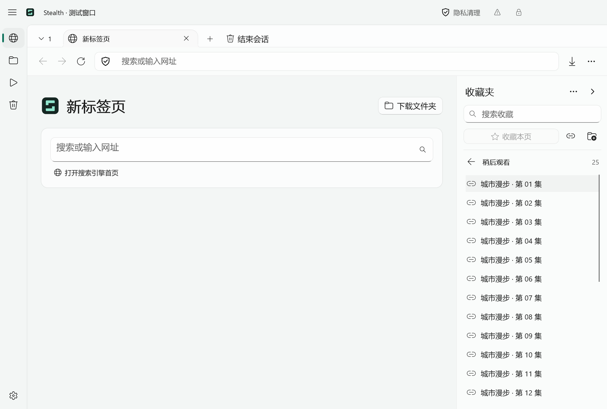
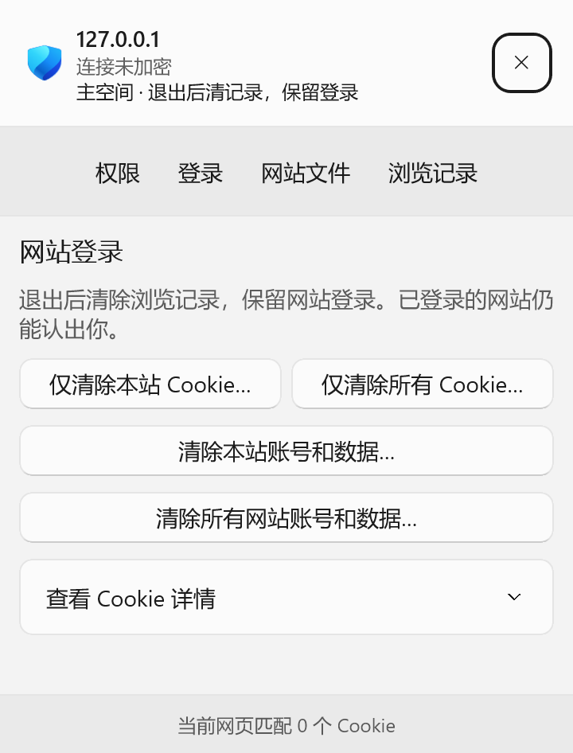

逐层浏览，随时收起
点网页右缘的收藏夹图标，进入文件夹后即可打开链接。Ctrl+单击或鼠标中键可在后台新标签打开。窄窗口展开时，面板覆盖在网页右侧。
R16.1 · 右侧收藏夹 私密浏览器 WINDOWS 原生
展开右侧收藏夹，在网页旁找到下一个要看的链接。可以沿用从 Chrome 导入的文件夹，按名称或网址搜索，也可以当场整理。
Windows 11 · x64 / ARM64 · 未签名预览版

点网页右缘的收藏夹图标，进入文件夹后即可打开链接。Ctrl+单击或鼠标中键可在后台新标签打开。窄窗口展开时，面板覆盖在网页右侧。
输入名称或网址查看所有文件夹中的匹配项。右击条目可以编辑、移动或删除。收藏本页、添加链接、新建文件夹都在同一面板完成。
在主空间收藏夹顶部的「…」菜单里选择「从 Chrome 导入…」，打开导出的书签 HTML。导入保留文件夹层级，同一目录中的重复链接只保留一份。需要迁出时，也可以从这里导出明文 HTML。
按 Ctrl+Shift+A，输入网页标题或网址，选择要切换的标签。长列表按本地快照筛选，输入时减少重复读取浏览器状态。
在标签搜索里切换到「最近关闭」，从本次会话最多 20 条记录中选择要重新打开的网址。按 Ctrl+Shift+T 可直接重开最近一项。
打开「更多操作」，去掉分享地址中已知的跟踪参数，保留其他参数和页面位置。遇到识别出的登录、支付或签名链接时会提示。

站点隐私面板
在地址栏打开站点面板，可以分别管理离线数据、权限与 Cookie。
清除 HTTP 磁盘缓存，网站保存的离线文档和登录 Cookie 可以继续使用。
清理当前来源的本地存储、数据库和离线缓存。先保存尚未同步的文档，确认后再继续。
按标题或网址筛选本次会话历史。锁定或结束会话后，历史清空。
CtrlH查找会话历史
主空间在本机保留用于登录的 Cookie 和网站存储。正常结束会话时清除本地浏览历史和 HTTP 缓存。异常退出后，下次浏览前重试清理。网站保存的账号活动由网站管理。
导入保险箱的媒体采用分块加密。下载仍是普通文件，不会自动进入保险箱，也不会因为结束会话而删除。
当前备份依赖 DPAPI。重装系统、换机或更换用户后可能无法恢复；重要原始文件请另行妥善备份。
Windows 便携包
选择与你的电脑匹配的版本。完整解压，即可开始。
2026.11.21-r16.1-preview.2.2
这是未签名预览版。Windows 可能显示 SmartScreen 提示，请自行判断是否信任，不要关闭系统保护。
开始之前
Intel / AMD 选择 x64；Windows on Arm 选择 ARM64。不确定时，可在系统信息中确认。
首次安装时，从固定目录打开 StealthWorkspace.exe。升级前备份并退出，按安装指南在原位置更新程序文件，保留原有保险箱和桌面入口。
设置保险箱密码，开始浏览。先验证媒体导入、导出与备份检查，再安排日常使用。
再多了解一点
最近关闭的网页地址只保留在本次解锁会话的内存中。锁定或结束会话会清空这些记录。要跨会话保留网址，可以先添加到收藏夹。
不是。Stealth 是使用 WinUI 3 与 WebView2 构建的独立项目，与 Microsoft 没有隶属关系，也不代表 Microsoft 背书。
当前备份依赖原 Windows 用户的 DPAPI，不保证换机或重装后恢复。请保留重要原始文件的独立备份，不要只依赖应用内备份。
应用会尝试让合适的后台页面休眠，但 WebView2 可能拒绝。音频、下载和全屏等场景需要继续工作，不能保证每个后台标签都休眠。
先查看故障排查，再到 GitHub Issues 提供版本、系统与复现步骤。请勿上传密码、保险箱、Cookie 或未经审阅的日志。